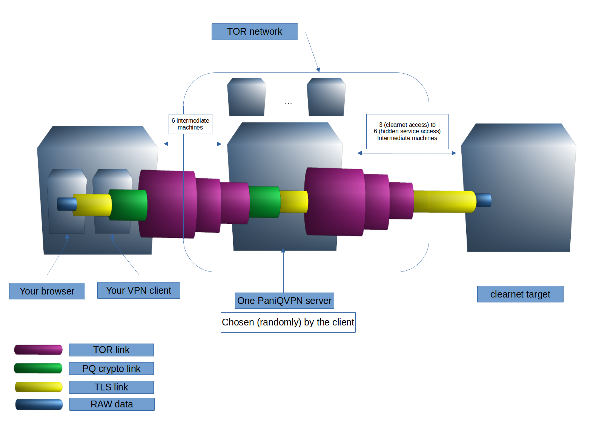

PaniQVPN
Post quantum cryptography based vpn over Tor for truly paranoids.
Why a quantum vpn?
-
Even if today no public quantum computer is publicly able to break the usual vpn encryption
(RSA and Diffie-Hellman), many actors are already storing communications with the
aim of decrypting them once the quantum advent is over. The scientific community
estimates such an advent in 10 to 15 years. Many post-quantum cryptographic algorithms
have already been developed and considered at least as reliable as current algorithms.
Why this one?
-
- Strongest security standards available by default
We currently use the most advanced and secure post quantum algorithms available to address the paranoid ones of you.
Today we are using p521_falcon1024 and p521_kyber90s1024 to establish the secure vpn connection, hybrid algorithms classified L5 according to the NIST.
They will be upgraded at any time in the event of a security breach.
- We only store the strictly minimum amount of data possible
-no personal information
-nolog:no ip/timestamps/data transfers
-no DPI (deep packet inspection) of any kind
of course we don't have any partnerships of any kind with others companies/agencies/...
For users we store: username, unique hash salted password, expiration timestamp.
This relation will be permanently deleted as soon as the user has expired.
False data is added regularly.
For payments we only store a salted hash of Monero transactions, without any link to any account.
False data is added regularly.
- Tor integrated
We will never know your real ip address and we also hide our servers real ip address to prevent state spying or censorship on our servers.
Tor can also hide the fact that you are utilizing PaniQVPN.
See this schema for more details
- We only accept Monero
Most secure payment at this time, because privacy is not an option
- Open source based
We are aware that roll our own self made crypto is a major security issue, so we are using open sources and trusted implementations of algorithms that can be found here (github clearnet)
- Secure by conception
principle of least authority, defensive programming, isolation, at mind for the whole development
fully open source based stack
each disk is strongly encrypted
check out our bug bouty program !
How to use
- Check this page!
Next goals
- increase number of servers / increase bandwidth
increase internal security over and over
search for ways to increase privacy and anonymity of users (junk traffic/delay noise?)
Suggestions are welcome!
General tips for your privacy
- Before doing anything we strongly recommend you to deeply interest yourself at least about privacy, opsec, and surveillance.
We provide a really powerful tool but you should always be aware of whatyou are doing.
Useful ressources:
http://www.dds6qkxpwdeubwucdiaord2xgbbeyds25rbsgr73tbfpqpt4a6vjwsyd.onion/wiki/Documentation
https://book.cyberyozh.com/" (clearnet)
Always encrypt your communications (https over http, ssh, ...)
Never give any kind of information that can by any means identify you, never
Bug bounty program
- To improve the security of PaniQVPN we encourage research and disclosure of security flaws by launching our bug bounty program.
To propose a bug submit a poc and if possible (for more transparency) the cvss vector of your vulnerability calculated here
(clearnet). Don't forget to add a way to reach you in return (prefer pgp) to send you your reward.
Rewards are licenses whose duration follows the following rule:
| cvss |
[1, 2] |
]2, 4] |
]4, 6] |
]6, 8] |
]8, 10] |
| duration |
1 day |
1 week |
1 month |
6 months |
1 year |
To activate your earned license go here.
If you wish you will be added to the dedicated leaderboard.
p.s.: We plan to improve captcha so please don't report weak captcha as a security flaw
p.s.2: No vulnerabilities found yet
Q&A
-
Why not fully open source?
The client is in fact already open source.
if the project goes well we also plan to share the full code of servers but for now, we estimate that this is to risky for users and us to do so.
Why a free trial?
The aim of the trial offer is to convince the sceptics (and rightly so) of the good functioning of the vpn and the technologies at work (use of post-quantum cryptography, operation on Tor, multi-server architecture, etc... ).
This option also allows you to make sure that the operating environment is properly set up before buying a paid license.
Why don't provide DNS and NTP servers?
Simply because we don't want to control the full chain of information.
But if this is a request from users and trust for the PaniQVPN project is strong it could be realized.
Ask your bellow!
General scheme:

Contact
For bug report, suggestions, questions, ...
Since 2021